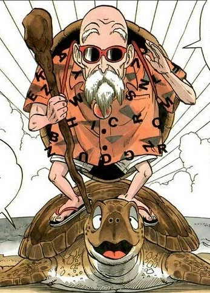

 Master Roshi (武む天てん老ろう師し Muten Rōshi, lit. "Old Heavenly Martial Arts Master"), also known as the Turtle Hermit (亀かめ仙せん人にん Kame Sen'nin) (or Turtle ( Kame)[6] in his youth) and God of Martial Arts (武道の神様 Budō no Kami-sama), is a perverted hermit and a master of martial arts. He lives on his own isolated island called Kame House, where he may be willing to train students who travel to his doorstep. He is also the originator of the Kamehameha Wave. Despite his lecherous tendencies and his old age, Roshi is an extremely respected and capable warrior, serving as the master of Gohan, Ox-King, Goku, Krillin, and Yamcha. His drive to push his students to new heights and support them on their martial arts journeys makes him one of the most notable supporting characters in the series.
Master Roshi is over three hundred years old at the start of the series and provides various stories to explain his longevity.
Roshi enjoys eating home-delivered pizza, which serves as a tongue-in-cheek joke because Roshi lives so far out into the ocean.
He also enjoys reading, watching TV, using the internet (mainly for adult sites), playing video games, and taking afternoon naps.
He is a very lecherous pervert who constantly watches Wide-Thigh Aerobics on television or looks at Dirty Magazines in his spare time.
He even accepts a bribe from Bulma to show him her panties in exchange for a Dragon Ball early in the series .
Master Roshi often makes humorous sexual advances on any beautiful woman he can get close enough to; usually Bulma or Launch in Dragon Ball or Maron, Android 18, or Chi-Chi in Dragon Ball Z.
He firmly believes that he is the ultimate stud and very cool, even though his fashion sense and mannerisms seem to be at least a few generations out of style.
His lechery is apparently a relatively recent development, as he was once able to ride the Flying Nimbus, an ability he has lost by the time he passes it on to Goku.
Aside from his lechery, he was also somewhat of an alcoholic, as implied in the Japanese version of The Fire-Eater where he admitted he gave misleading information about the Hikui Bird in his book regarding the Bansho Fan because at the time he wrote it, he had been severely drunk (the dub changes this to him admitting he made the entire thing up so he could impress girls), and confirmed in the Japanese version of Broly - The Legendary Super Saiyan.
Although he is dedicated to training his students in the way of the Turtle School, he will nonetheless tell off his students when they are practicing the Kamehameha wave because the water is ruining his magazines.
The only time he did not tell off one of his students for this when practicing the Kamehameha wave was when Krillin tried to practice it in order to get his mind off his breakup with Maron, partially because he was asleep when it happened.